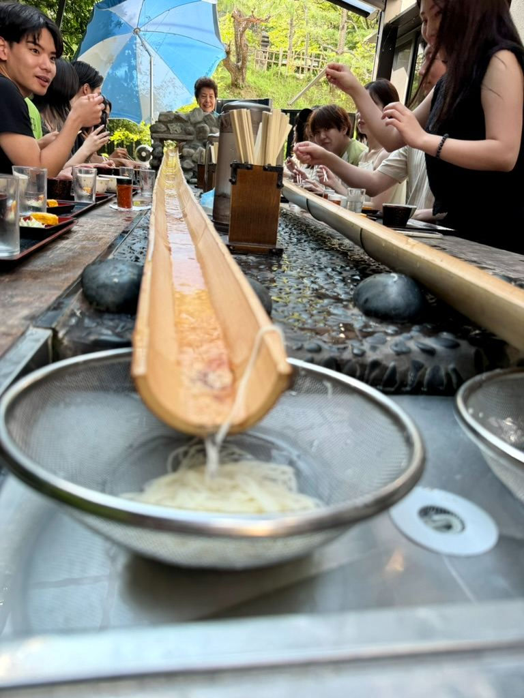
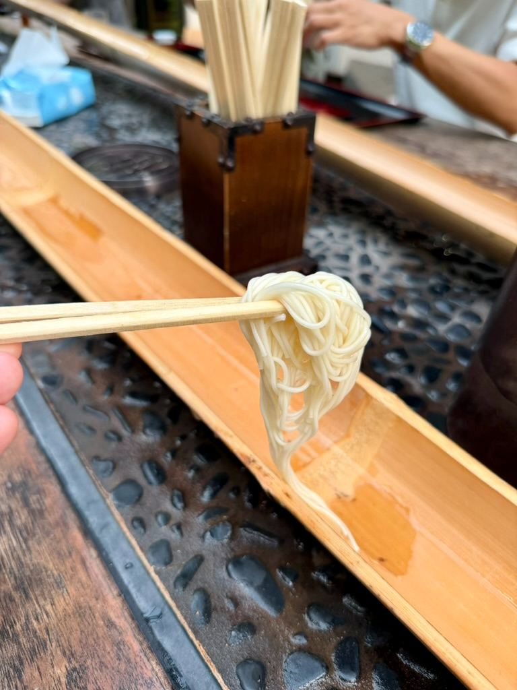
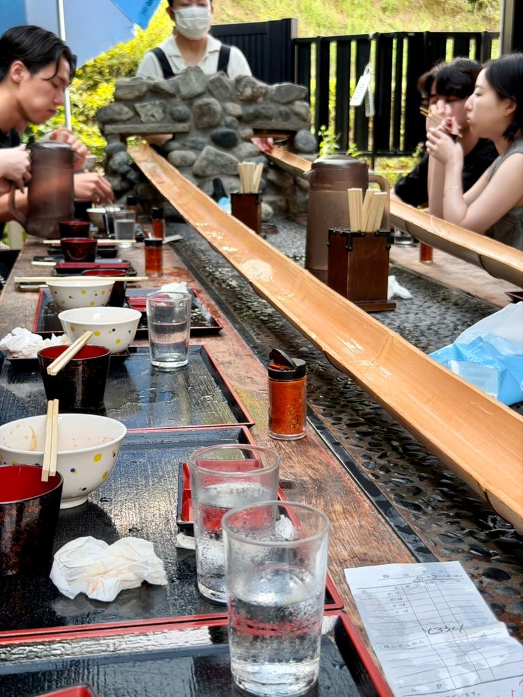
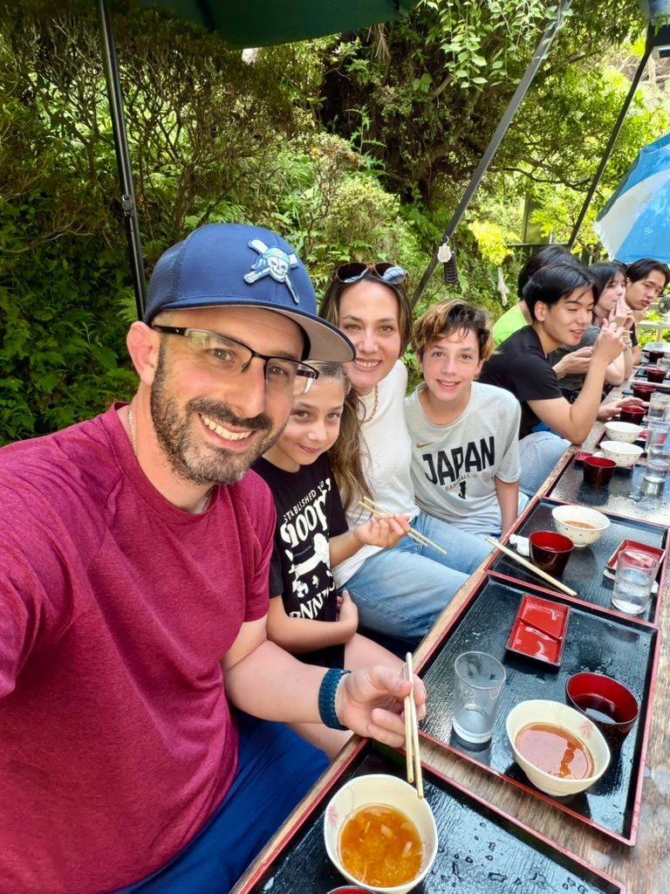

Catching Our Lunch! 🥢 Our Traditional Japanese Nagashi Somen Experience




Watch on YouTube →
If you’re looking for one of the coolest and most interactive dining experiences in Japan during the warmer months, you *have* to try **Nagashi Somen** (flowing somen noodles)!
On our latest Emmerican Adventure, we took the family out for an unforgettable traditional lunch where catching your food is half the fun.
---
### What is Nagashi Somen? 🥢🌊
*Nagashi Somen* translates to "flowing noodles". Long pieces of split bamboo flumes are set up outside along the dining tables with cold, fresh spring water running down them.
The staff send small bundles of chilled, thin wheat noodles (*somen*) sliding down the bamboo flumes. Your goal? Catch them with your chopsticks before they pass you by!
Don't worry if you miss a bundle—any noodles that make it past the table flow straight down into a clean, stainless-steel strainer at the end of the bamboo flume!
---
### How the Dining Setup Works 🥢✨
1. **Grab Your Dipping Sauce & Sides**: Each seat gets set up with a tray featuring savory *tsuyu* dipping sauce, fresh green onions, and side dishes like Japanese rolled omelet (*tamagoyaki*).
2. **Spice It Up**: We love adding a sprinkle of Japanese chili pepper (*shichimi*) into our dipping sauce for a little extra kick!
3. **Catch & Dip**: Keep your chopsticks ready over the bamboo chute! Once you pluck the noodles out of the running water, dip them straight into your cold sauce and enjoy.
---
### Why We Loved It ❤️
It’s completely outdoor/open-air dining surrounded by beautiful greenery, making it super refreshing on a hot day. The kids had an absolute blast testing their chopstick skills, and it turned lunchtime into a fun family challenge.
Have you ever tried catching your food down a bamboo slide? Let us know in the comments below! 💬✨
---
📺 **Watch our YouTube Short to see the action in real time!**
[Catching My Lunch! 🥢 Traditional Japanese Nagashi Somen](http://www.youtube.com/watch?v=3omi8pDkkEA)